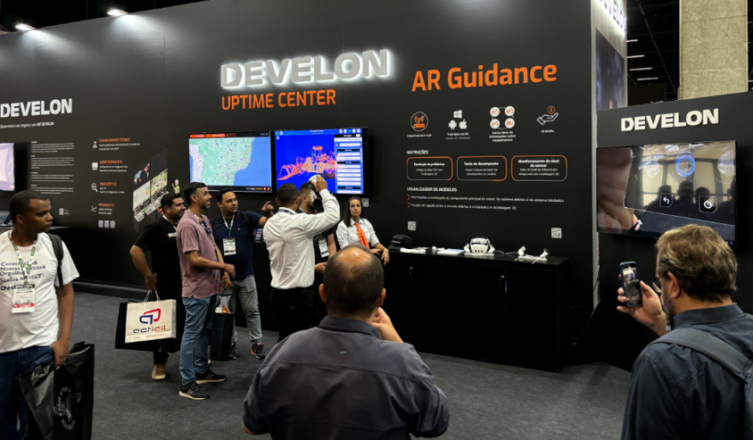
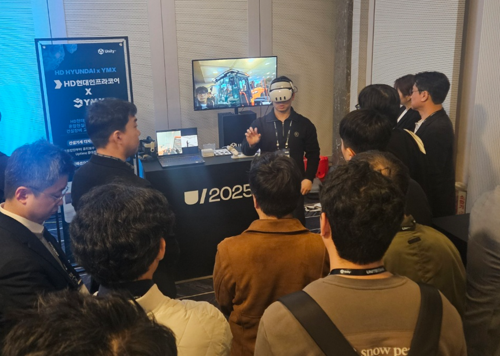
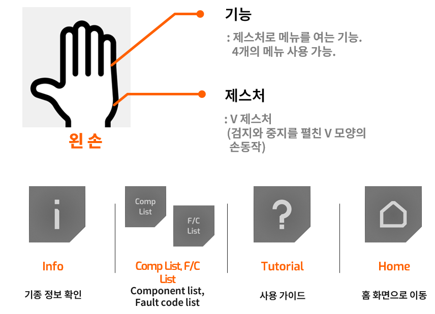
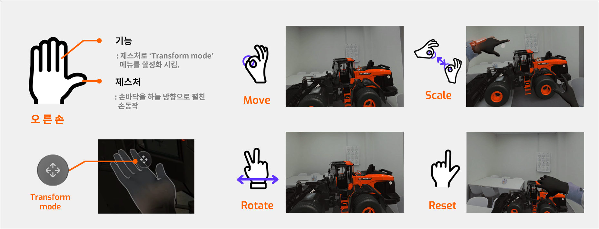

MR Guidance
Name : 김민규
HP : 010-2766-8879
Email :
cicg02@gmail.com
이 프로젝트는 MR(Mixed Reality) 기술을 활용하여 굴착기 고장 부위와 조치방법을 안내하고 체험할 수 있도록 제공합니다.
사용자는 일반 전시회 방문객, 굴착기 제조사 관계자이며,
타겟 디바이스는 Meta Quest 3 입니다. (OVR Interaction SDK 사용)
|

<브라질 M&T EXPO> |

<유니티 유나이트 서울 2025> |
|
이 화면은 로그인 화면입니다.
-UnityWebRequest 활용한 HTTP 통신으로 계정 정보를 확인(AR Guidance와 같은 API 호출)

<로그인 화면> |
|
이 화면에서 빛나는 중장비 모델 중 하나를 잡아 위쪽의 두 콘텐츠 구역 중 하나에 넣으면, 해당 콘텐츠로 이동하면서 다음 씬으로 전환됩니다.
-OVRGrabber/Grabbable 활용
|
1
<콘텐츠 및 모델 선택> |
|
이 화면에서는 왼손 핸드 트레킹 기술을 활용한 제스처로
콘텐츠 주요 기능인 부품 관련 제어, 모델 정보 표시, 홈(콘텐츠 선택화면)으로 이동, 튜토리얼을 실행할 수 있습니다.
|

|
|
<부품 관련 제어 > |
<기종 정보 확인> |
|
|
<홈(콘텐츠 선택화면)으로 이동> |

<튜토리얼> |
|
이 화면에서는 오른손 트레킹 기술을 활용한 제스처로
3D 중장비 모델을 Move, Rotate, Scale, Reset을 할 수 있습니다.
|

|
|
<Move, Rotate, Scale> |
|
<Reset> |
|